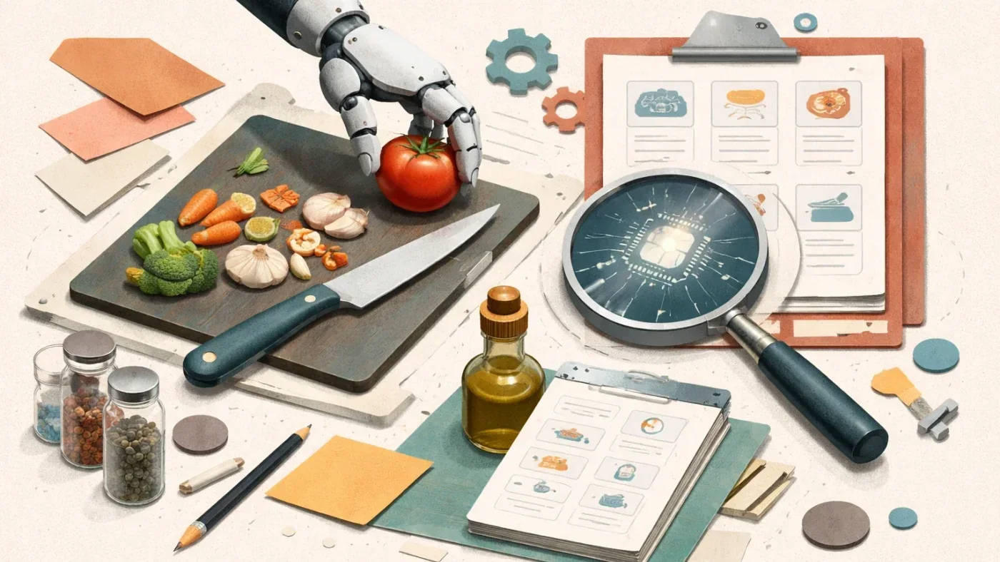

СтартапыРоссия
Убыток OpenAI в 2025 году достиг $39 млрд при выручке $13 млрд
OpenAI потеряла $39 млрд в 2025 году — но $30 млрд из них бумажные. Что стоит за этой цифрой?
vc.ru AI/стартапы
16 июн.Российский рынок ИИ: государственная политика, отечественные модели, кейсы компаний и академические достижения.
209 материалов
OpenAI потеряла $39 млрд в 2025 году — но $30 млрд из них бумажные. Что стоит за этой цифрой?
Физик, потерявший отца из-за опоздавшего лекарства, построил ИИ-компанию почти на триллион долларов

DeepSeek стал самым дорогим ИИ-стартапом Китая: $7,4 млрд раунд и оценка $50 млрд

Россияне все чаще делегируют ИИ выбор ужина: 10% запросов к ассистенту «Самоката» — готовые идеи.

Почему первое число на дашборде управляет всеми остальными решениями — и при чём тут ИИ

Нейросеть никогда не скажет «я не знаю» — и это главная причина проверять её ответы

SpaceX, Anthropic и OpenAI идут на биржу. Кто сколько стоит и что их сдерживает

Модель в 15 КБ бьёт float-аналог на MNIST и рассуждает без LLM — эксперимент из июня 2026

Бэкдор в LiteLLM, скачанный 47 тысяч раз за три часа — симптом нерешаемой уязвимости ИИ-агентов.
Серверы НИЦЭВТ для ИИ получили статус отечественных — теперь их можно закупать по госпрограммам

HashiCorp запустила Terraform MCP Server 1.0 — ИИ теперь пишет конфиги по свежим провайдерам

Что обсуждали на главной конференции по робототехнике — и почему Китай захватил выставку в Вене

Яндекс сравнил MCP и CLI + Skill на 400+ запросах — разница в расходе токенов достигает 5,5 раза

Белград, 1000 ML-специалистов и платформа LANDEV ИИ: что обсуждали на OpenTalks.AI 2026

Семь инструментов на Python — и языковая модель начинает читать файлы, запускать bash и ходить в интернет

30% разработчиков деплоят ИИ-код без проверки. Почему это старая проблема в новой обёртке

Что происходит, когда ИИ убирает все барьеры — и зачем они вообще были нужны

Эксперимент с генерацией таймлапса роста березы выявил слабые места Qwen, Luma и Pika.

ИИ-пилот работает на демо, но застревает при масштабировании — вот почему и как это исправить

Почему даже самые умные LLM не смогут заменить весь спектр работы — и куда на самом деле стоит смотреть инвесторам.

BSS перевела Dialog Composer на ИИ-агентов: LLM, MCP и Python-инструменты вместо жёстких скриптов

Каждый второй сотрудник несёт рабочие данные в личный ChatGPT — чем это грозит бизнесу

Fork-Tech научила PWS централизованно управлять навыками ИИ-агентов — версии, доступы, обновления в одной точке

Разбираемся, как устроены ИИ-агенты, написав простейшего на Python

Почему Garak и PyRIT не подходят для российских компаний — и что с этим делать

ИИ-агенты делают кадровую работу, а HRIS этого не видит — чем это грозит HR-директорам

Как управлять LLM без дообучения: туториал по Activation Steering с кодом на PyTorch

Fable 5 и Opus 4.8 требуют противоположных промптов — разбор официальных гайдов Anthropic и OpenAI

Незнакомец пишет в бот — ИИ пишет код — код уходит в прод. Без единого ревью человеком
Сколько стоит GPU в российском облаке в 2026 — сравнение шести провайдеров с реальными ценами